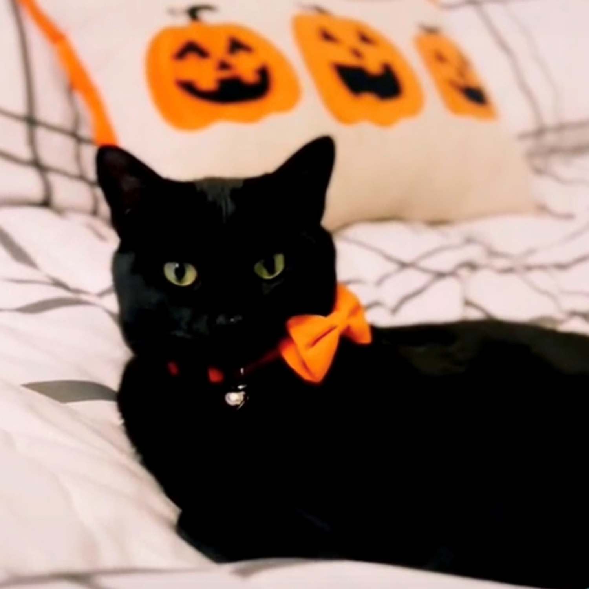

Samuel V Serrano (he/him/his) is a professional designer hailing from Phoenix, Arizona, with a keen appreciation for unique designs and distinctive aesthetics. As a proud Latino American and a member of the LGBTQIA+ community, Samuel draws inspiration from his cultural roots and personal experiences, infusing inclusivity into his art to foster unity through design.
Having commenced his design journey at the age of 22, Samuel pursued graphic design at Glendale Community College in Arizona. His artistic inclinations have been evident since childhood, spanning various mediums such as music, painting, and story writing. A graduate of Arizona State University within the Ira A. Fulton Schools of Engineering, Samuel holds a BS in Graphic Information Technology, with a specialization in graphic and web design. In addition to his formal education, he dedicates his leisure time to engaging in graphic drawing and 3D modeling.
Samuel has actively pursued professional development at ASU, undertaking accelerated courses in website design and development, where he has acquired proficiency in HTML, CSS, and Javascript. Residing in Phoenix, Arizona, alongside his feline companion, Raven, Samuel is not only dedicated to his craft but also maintains a vibrant personal life. When not immersed in design, he can be found delving into art history literature, digital drawing on his iPad using Procreate, or indulging in watercolor painting in his sketchbook. Beyond the realm of art, Samuel enjoys video games, music, and delving into the intricacies of photography.
